완료한 프로세스를 대시보드와 열 지도에서 살펴봅니다. 전체 처리 주기와 단계별 소요·대기를 구분하고, 숫자를 읽을 때 주의할 표시 결함을 확인합니다.
설치본 수정이 필요합니다
이 장의 실행 화면은 아래 수정을 넣은 설치본(2026-10-30)에서 찍었습니다. 이 수정이 설치 저장소에 들어가기 전의 설치본에서는 시간 계산이나 분석 화면이 다를 수 있습니다. 들어가면 이 안내를 지웁니다.
- 분석: process-gpt-analytic #1 — 실제 시작 시각으로 소요·대기
- 화면: process-gpt-vue3 #236 — 첫 단계 시작 시각·대시보드
- 설치: process-gpt-infra-docker #1 — 분석 서비스 경로·시간대
완료한 세 실행을 읽습니다#
이번 장에서는 새 업무를 시작하지 않습니다. 앞 장에서 완료한 실행을 분석합니다. 촬영 시점에는 6장의 「영업 제안서 작성」, 7장의 「영업 제안서 승인」, 13장의 견적 실행이 각각 1건 있었습니다.
세 실행은 모두 「COMPLETED」였습니다. 승인 실행은 반려, 재작성과 승인을 거쳤습니다. 견적 실행은 「한빛오피스 대량 주문 견적 승인」입니다. 독자의 실행 횟수와 처리 시간이 다르면 화면의 숫자도 달라집니다.
장진영은 관리자로 전체 현황을 살펴봅니다. 김민지나 박서연의 업무가 오래 걸려 보이더라도 숫자 하나로 담당자를 평가하지 않습니다. 어떤 단계인지, 처리와 대기 중 무엇을 보여 주는지 먼저 확인합니다.
이 장에서 리드타임은 시작부터 완료까지 걸린 전체 시간을 읽는 관점입니다. 대시보드의 「처리 주기」와 개별 작업의 소요시간을 나누어 봅니다. 전체 실행 시간과 한 작업의 평균 시간은 같은 값이 아닙니다.
따라 하기 1 — 대시보드의 전체 현황 보기#
- 사이드바에서 「분석」의 「대시보드」를 엽니다.
- 「분석 대시보드」와 「프로세스 실행 현황 및 분석」을 확인합니다.
- 위쪽 카드의 실행 수와 완료 수를 읽습니다.
- 「작업 배분(에이전트 vs 사람)」과 월별 추이를 확인합니다.
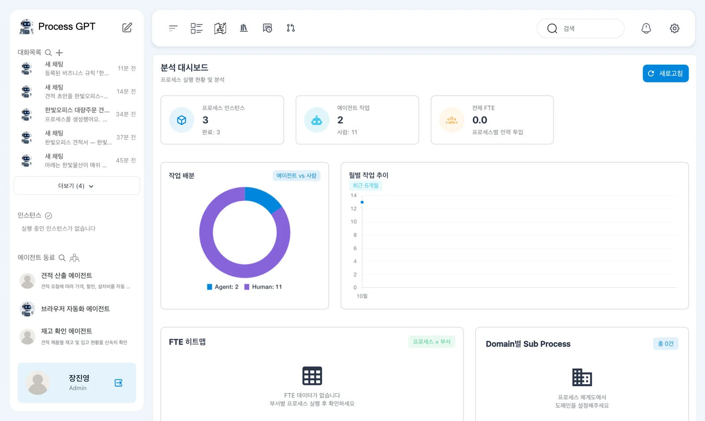
화면 위에는 「새로고침」이 있습니다. 촬영 시점의 카드는 「프로세스 인스턴스 3 (완료: 3)」, 「에이전트 작업 2 (사람: 11)」, 「전체 FTE 0.0」이었습니다.
작업 배분 도넛에는 「Agent 2」와 「Human 11」이 표시되었습니다. 「월별 작업 추이 최근 6개월」도 있습니다. 먼저 완료한 실행이 세 건이라는 점과 사람·에이전트의 작업 표시를 구분합니다.
| 위쪽 항목 | 촬영에서 보인 값 |
|---|---|
| 「프로세스 인스턴스」 | 3, 완료 3 |
| 「에이전트 작업」 | 2, 사람 11 |
| 「전체 FTE」 | 0.0 |
| 「작업 배분(에이전트 vs 사람)」 | Agent 2, Human 11 |
실행 수와 작업 수를 섞어 읽지 않습니다. 한 프로세스 실행에는 여러 단계가 들어 있습니다. 실행이 세 건이라고 해서 처리한 작업도 세 개라는 뜻은 아닙니다.
따라 하기 2 — 데이터가 있는 곳과 없는 곳 구분하기#
- 대시보드를 아래로 내려 「FTE 히트맵」을 확인합니다.
- 「Domain별 Sub Process」의 안내를 읽습니다.
- 「부서별 작업 수량」과 「에이전트 vs 사람 성능 비교」의 값을 확인합니다.
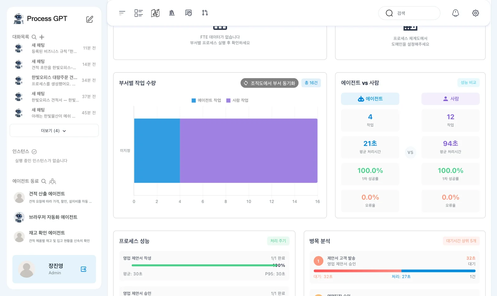
「FTE 히트맵」에는 「FTE 데이터가 없습니다」가 나왔습니다. 「Domain별 Sub Process 총 0건」에는 「프로세스 체계도에서 도메인을 설정해주세요」라는 안내가 있었습니다.
이 표시는 앞에서 실행한 프로세스가 사라졌다는 뜻으로 읽지 않습니다. 실행 카드에는 완료 세 건이 있습니다. 각 영역에서 필요한 정보가 준비되어 있는지 별도로 확인합니다. 이 촬영에서는 FTE나 도메인 분석 결과를 얻지 않았습니다.
「부서별 작업 수량」에는 「조직도에서 부서 동기화」와 「총 16건」이 보였습니다. 아래의 「에이전트 vs 사람 성능 비교」에는 다음 값이 표시되었습니다.
| 대상 | 작업 | 평균 처리시간 |
|---|---|---|
| 에이전트 | 4 | 21초 |
| 사람 | 12 | 94초 |
에이전트에는 「100.0%」의 1차 성공률과 「0.0%」의 오류율도 표시되었습니다. 이 값은 분석 화면에 표시된 결과입니다. 견적서 문장의 정확성이나 워드 양식 보존까지 검증했다는 뜻으로 사용하지 않습니다.
영역별 작업 수가 다르게 표시됩니다
위쪽 카드는 에이전트 2·사람 11이고, 성능 비교는 에이전트 4·사람 12입니다. 부서별 영역에는 총 16건이 나옵니다. 촬영 자료만으로 집계 차이의 원인을 확정할 수 없습니다. 서로 같은 수라고 가정하여 합치거나 비율을 다시 계산하지 않습니다.
따라 하기 3 — 전체 처리 주기 확인하기#
- 「프로세스 성능」의 「처리 주기」를 찾습니다.
- 작성, 승인과 견적 프로세스의 완료 수와 평균 시간을 비교합니다.
- 「최근 프로세스 인스턴스」에서 개별 실행의 소요시간을 확인합니다.
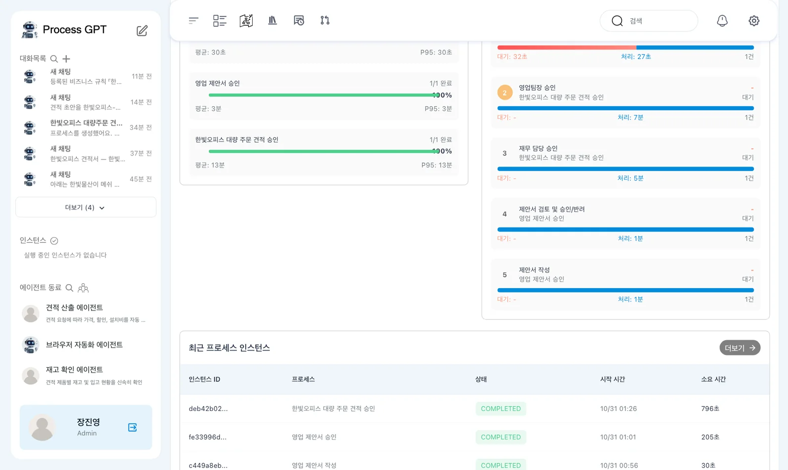
촬영에서는 각 프로세스가 1/1 완료로 나왔습니다. 평균 처리 주기는 「영업 제안서 작성」 30초, 「영업 제안서 승인」 3분, 견적 13분입니다.
「최근 프로세스 인스턴스」에는 작성 30초, 승인 205초, 견적 796초가 표시되었습니다. 한쪽은 분 단위로, 다른 쪽은 초 단위로 보입니다. 화면에 보이는 단위를 함께 읽습니다.
이번에는 프로세스마다 실행이 한 건뿐입니다. 따라서 이 평균을 여러 고객 주문에서 반복 확인한 대표 시간으로 사용하지 않습니다. 이번 실습에서 어떤 실행이 상대적으로 오래 걸렸는지 찾는 데 사용합니다.
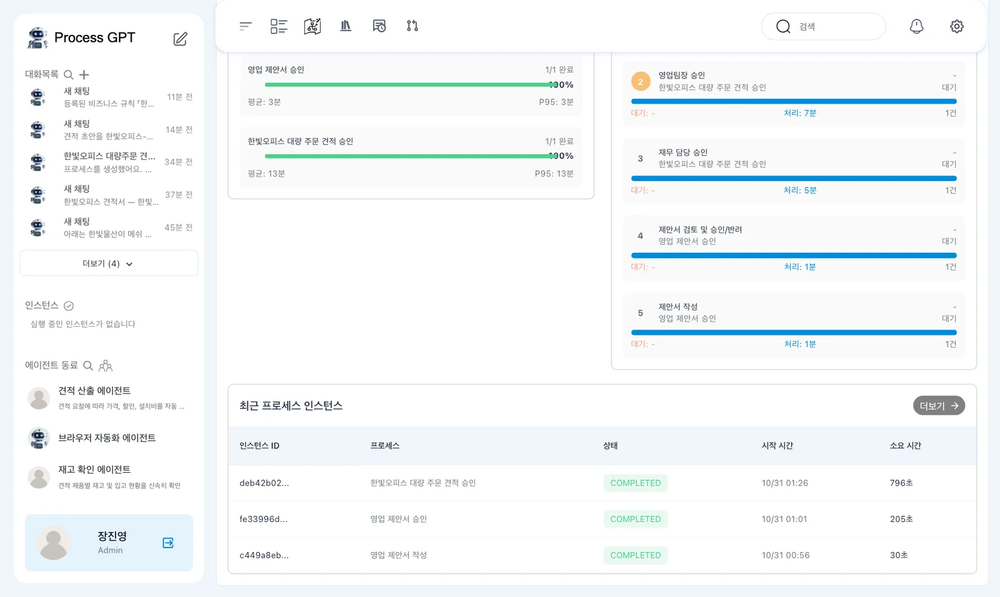
시작 시간에 9시간 차이가 남아 있습니다
「최근 프로세스 인스턴스」의 시작 시간 칸은 실제보다 9시간 늦게 보였습니다. 실제 10월 30일 16:26인 값이 10월 31일 01:26으로 표시되었습니다. 이 칸만 보고 다음 날 실행한 업무라고 판단하지 않습니다.
따라 하기 4 — 대기와 처리를 구분하기#
- 「병목 분석」의 「대기시간 상위 5개」를 읽습니다.
- 각 항목에서 「대기」와 「처리」 중 어떤 설명이 붙었는지 확인합니다.
- 견적의 승인 단계와 제안서 고객 발송 단계의 표시를 비교합니다.
촬영에서 첫 항목은 「제안서 고객 발송」이었습니다. 대기 32초와 처리 27초가 함께 표시되었습니다. 다음 항목에는 「영업팀장 승인」 처리 7분, 「재무 담당 승인」 처리 5분이 보였습니다.
그 뒤에는 「제안서 검토 및 승인/반려」 처리 1분과 「제안서 작성」 처리 1분이 있었습니다. 영역 제목이 대기시간이라고 해도 각 항목의 분 단위 숫자를 모두 대기시간으로 옮겨 적지 않습니다.
| 확인한 단계 | 촬영 화면에서 읽은 시간 |
|---|---|
| 「제안서 고객 발송」 | 대기 32초, 처리 27초 |
| 「영업팀장 승인」 | 처리 7분 |
| 「재무 담당 승인」 | 처리 5분 |
| 「제안서 검토 및 승인/반려」 | 처리 1분 |
| 「제안서 작성」 | 처리 1분 |
병목 후보를 찾은 뒤에는 해당 프로세스의 흐름으로 이동해 읽습니다. 승인에 시간이 많이 쓰였다는 것과 담당자가 계속 작업했다는 것은 구분해야 합니다. 촬영 자료에는 시간이 길어진 이유까지 들어 있지 않습니다.
따라 하기 5 — 프로세스 분석 열기#
- 분석 메뉴의 「Heatmap」을 엽니다.
- 「프로세스 분석」과 「실행 이력 기반 성능 분석 및 병목 구간 탐지」를 확인합니다.
- 「분석할 프로세스 선택」에서 「영업 제안서 승인」을 선택합니다.
- 「기간」은 「최근 30일」, 「상태」는 「전체」, 「지표」는 「총 소요시간」인지 확인합니다.
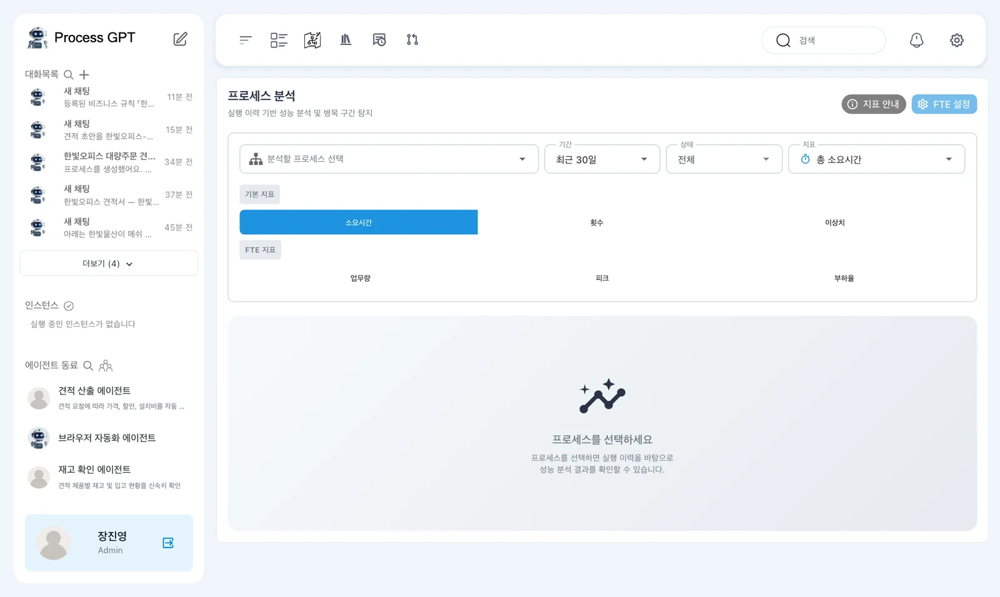
위쪽에는 「지표 안내」와 「FTE 설정」이 있습니다. 안내에는 「기본 지표: 소요시간 · 횟수 · 이상치 / FTE 지표: 업무량 · 피크 · 부하율」이 표시됩니다.
이번에는 실제로 촬영한 소요시간과 횟수를 살펴봅니다. FTE 데이터가 없는 상태에서 업무량이나 부하율의 결과를 추정하지 않습니다.
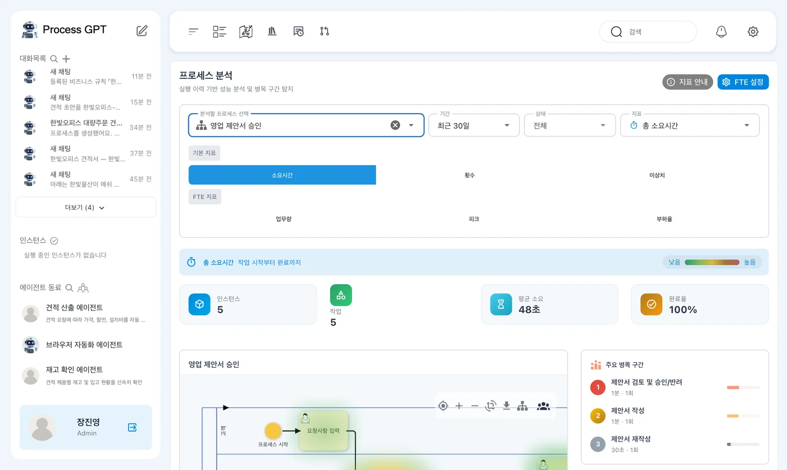
승인 프로세스의 카드는 「인스턴스 5」·「작업 5」·「평균 소요 48초」·「완료율 100%」였습니다. 전체 실행이 205초였다는 점과 작업 평균이 48초라는 표시를 구분합니다.
「인스턴스」 카드에 작업 수가 표시됩니다
승인 프로세스는 실행 1건인데 「인스턴스 5」로 보였습니다. 이 칸에 작업 수가 표시되는 결함이 남아 있습니다. 대시보드의 완료 실행 수와 대조하고, 이 숫자를 실행 다섯 건으로 해석하지 않습니다.
따라 하기 6 — 승인 흐름의 열 지도 읽기#
- 흐름도 위에 표시된 열 지도를 봅니다.
- 주요 병목의 단계 이름을 흐름도에서 찾습니다.
- 소요시간 분포의 최소·최대·중앙값·평균을 읽습니다.
- 「지표」를 「횟수」로 바꾸고 검토 단계의 횟수를 확인합니다.
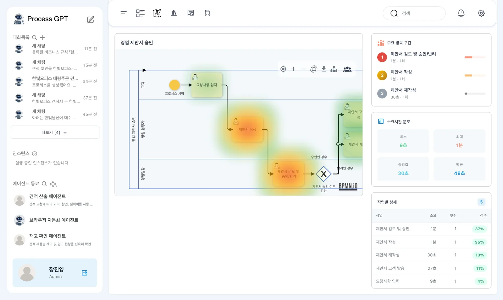
주요 병목에는 「제안서 검토 및 승인/반려」가 1분·1회·37%, 「제안서 작성」이 1분·35%, 「제안서 재작성」이 30초·13%로 나왔습니다.
소요시간 분포는 최소 9초, 최대 1분, 중앙값 30초, 평균 48초입니다. 흐름도에서 오래 걸린 단계를 찾은 뒤 아래 수치로 확인합니다. 색만 보고 정확한 시간을 추측하지 않습니다.
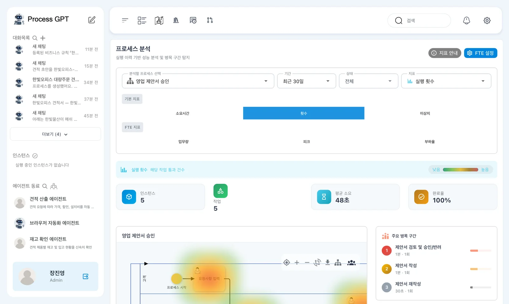
7장에서는 장진영이 한 번 반려하고, 김민지가 다시 작성한 뒤 장진영이 승인했습니다. 검토를 두 번 처리했지만 같은 할 일을 다시 열었으므로 분석에서는 「1회」로 셌습니다.
「1회」가 반려 없음을 뜻하지 않습니다
같은 검토 작업을 다시 여는 방식의 실행은 두 번 검토해도 「1회」로 표시됩니다. 횟수만으로 반려가 없었다고 결론 내리지 않습니다. 재작성 단계와 실제 실행 흐름을 함께 확인합니다.
따라 하기 7 — 견적 승인과 비교하기#
- 「분석할 프로세스 선택」에서 「한빛오피스 대량 주문 견적 승인」을 선택합니다.
- 「지표」를 「총 소요시간」으로 놓고 요약 카드와 주요 병목을 읽습니다.
- 흐름도에서 영업팀장 승인과 재무 담당 승인을 찾습니다.
- 「횟수」 지표도 확인한 뒤 소요시간 결과와 구분합니다.
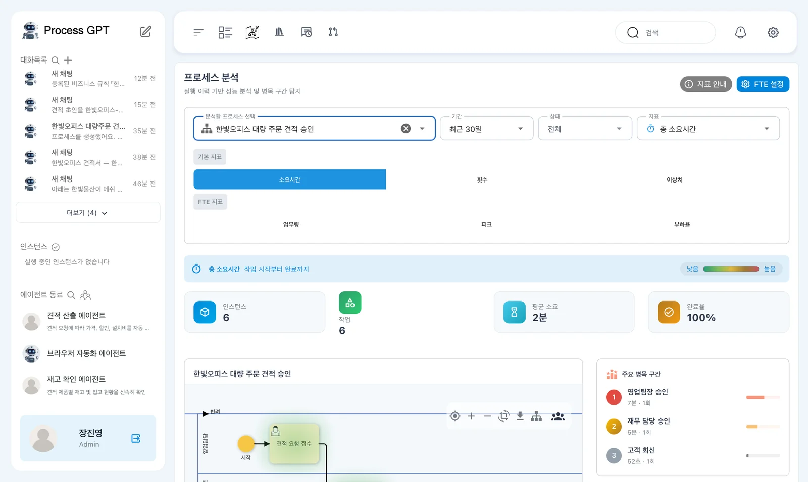
견적은 「인스턴스 6」·「작업 6」·「평균 소요 2분」으로 나왔습니다. 여기에서도 인스턴스 칸은 실행 건수로 읽지 않습니다. 촬영 데이터의 견적 실행은 한 건입니다.
주요 병목은 「영업팀장 승인」 7분·53%, 「재무 담당 승인」 5분·34%였습니다. 「고객 회신」은 52초입니다. 「견적 산출」 21초, 「재고 확인」 20초, 「견적 요청 접수」 9초도 확인했습니다.
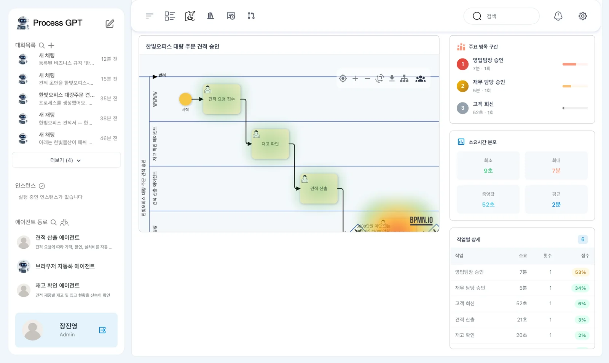
이번 실행에서는 두 승인 단계가 큰 비중을 차지했습니다. 이를 승인 절차를 먼저 살펴볼 근거로 삼을 수 있습니다. 다만 한 번의 실습 결과만으로 승인 단계를 없애거나 담당자의 능력을 판단하지 않습니다.
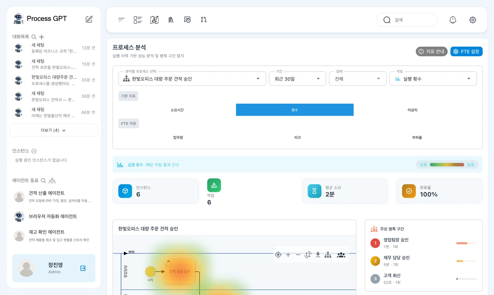
이번 견적 실행은 공개한 13장 화면과 경로가 다릅니다
새로 생성한 정의에서는 약 653만 원 견적도 영업팀장 승인 뒤 재무 담당 승인으로 갔습니다. 저장 때 「BPMN 검증 결과」에 「게이트웨이에 최소 2개의 분기가 필요합니다」와 「승인자 결정」이 표시되었지만 그대로 저장한 정의입니다. 이 분석은 그 실행을 끝낸 기록이며, 재무 승인이 올바른 경로였다는 증거는 아닙니다.
분석 숫자를 읽기 전에 확인할 점#
이번 분석은 실제 완료한 세 실행을 바탕으로 합니다. 설치 과정에서 예시 데이터와 시간대 문제가 먼저 수정되었습니다. 남아 있는 화면 결함과 이미 고친 계산 문제를 구분합니다.
모든 작업이 9시간으로 보이면 설치 상태를 확인합니다
촬영 전에는 분석 서비스가 DB 시간대 설정 전에 시작하여 모든 작업 시간이 9시간으로 나오는 문제가 있었습니다. 분석 서비스가 DB 마이그레이션이 끝난 뒤 시작하도록 고쳤고, 이 시작 순서 수정은 장 앞의 process-gpt-infra-docker #1에 들어 있습니다. 이미 띄운 설치본이라면 분석 서비스를 한 번 다시 시작합니다.
또한 처음 분석할 때 예시 테넌트의 「영업활동 프로세스」 10건이 섞이는 문제가 있었습니다. 분석 수정에서는 예시 데이터 생성을 기본으로 껐고, 촬영 설치에 있던 예시 행도 지웠습니다.
따라서 이번 화면의 병목을 읽을 때는 세 가지를 먼저 확인합니다. 내가 실행한 프로세스인지, 표시된 수가 실행 수인지 작업 수인지, 시간의 단위와 의미가 무엇인지 확인합니다. 그 뒤에 오래 걸린 단계의 업무 내용을 살펴봅니다.
다음 장으로#
완료한 실행의 전체 처리 주기와 단계별 소요·대기를 비교했습니다. 표시 결함 때문에 해석을 멈춰야 하는 곳도 확인했습니다. 17장에서는 전략목표에 완료 건수, 평균 처리시간과 설문 점수 KPI를 연결하고 측정값을 갱신합니다.
확인 문제
- 승인 프로세스의 「인스턴스 5」는 실행 다섯 건을 뜻하나요?
- 검토 횟수가 「1회」인데도 반려와 재검토가 있었던 이유는 무엇인가요?
- 견적에서 승인 단계의 비중이 높다는 결과만으로 담당자가 느리다고 판단할 수 있나요?
답
- 아닙니다. 촬영에서는 실행이 한 건이고 작업이 다섯 개입니다. 인스턴스 칸에 작업 수를 표시하는 결함이 남아 있습니다.
- 반려 뒤 같은 검토 할 일을 다시 열었기 때문입니다. 횟수 지표만 보지 말고 재작성 단계와 실행 흐름을 함께 확인합니다.
- 판단할 수 없습니다. 한 건의 실습 결과이며 시간이 길어진 이유는 확인되지 않았습니다. 처리·대기 표시, 실제 업무와 승인 경로를 먼저 확인합니다.